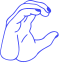
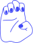

Hello! My name is


I am a designer and predoctoral researcher at UC Berkeley. I currently study the impact of LLMs on children’s intellectual humility, curiosity, and information-seeking habits.
I am a CODA (child of Deaf adults) – if you’re interested, you can read more about what that means here. In my past life (2021–2024) I studied Cognitive Science and Data Science at UC Berkeley, engineered ASL-based interfaces for accessible consent procedures at Gallaudet, conducted research on sign language linguistics, prototyped mental health wearables and apps, and designed educational games.
Now, I’m interested in how humans approach the cognitive task of designing for others. A few mysteries drive my research:
In my free time, I read (a lot), write (sometimes), make ceramics, watercolor paint, design exhibits for science museums, practice yoga, study French and Korean, and play outside.